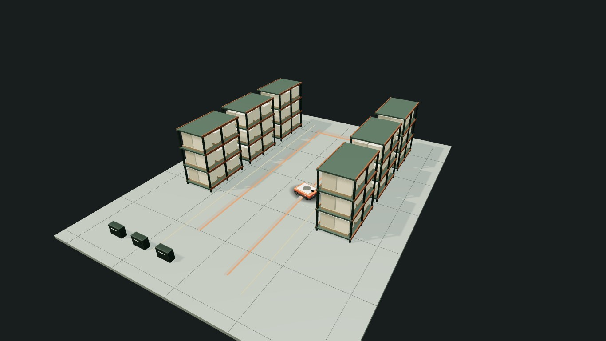

Склад
Приёмка, хранение, отбор и отгрузка. Груз, проходы и смены влияют на подбор. Имитация проверяет транспорт, G2P и тягачи.
Открыть пример ↗Подберите роботов, проверьте поддерживаемые процессы в симуляции и сравните сценарии внедрения.
Предварительная оценка. Демо без регистрации.
У робота есть маршрут. У маршрута — ограничения. Ширина прохода, очередь на загрузку, время зарядки. Из этих условий складывается работа всего парка.

Модель уточняет парк. Парк меняет экономику.
После имитации: 11 в работе и 2 в резерве. Рабочий парк прошёл пять повторов проверки. Результат относится к условиям демонстрационного склада площадью 20 000 м². На другом объекте имитация может увеличить парк.
Снимок публичного демо от 19.10.2026. Данные организатора и допущения модели. Исходные данные.
Открыть имитацию ↗Приёмка, хранение, отбор и отгрузка. Груз, проходы и смены влияют на подбор. Имитация проверяет транспорт, G2P и тягачи.
Открыть пример ↗Питание, бельё, лекарства и пробы. Проверьте служебные маршруты и очередь роботов к общему лифту.
Открыть пример ↗Багаж и служебные перевозки. Подберите тягачи и проверьте сцепки и маршруты. Потоки не привязаны к расписанию воздушных судов.
Открыть пример ↗| Сценарий | Вложения | Простой срок | NPV за 5 лет |
|---|---|---|---|
| Покупка | 40,3 млн ₽ | 2,2 года | +25,3 млн ₽ |
| RaaS | 10,2 млн ₽ | 1,5 года | +15,6 млн ₽ |
| Лизинг | 40,3 млн ₽ | 2,5 года | +25,3 млн ₽ |
Это пример, не прогноз для вашего объекта. Снимок от 19.10.2026: горизонт 5 лет, превращение высвобождённого труда в денежную экономию — 100%, оптимистичное допущение. NPV учитывает стоимость денег во времени, простой срок — нет.
Сравнить в продукте ↗Исходные условия, выбранный парк, проверка процессов, сценарии, источники и ограничения остаются в отчёте. PDF для обсуждения. Excel с формулами.
Посмотреть отчёт ↗Нет. Поддерживаются складской транспорт, G2P, тягачи, служебные доставки в больнице и перевозки в аэропорту. Для остальных процессов остаётся аналитическая оценка с явной пометкой.
Это предварительная оценка. Для внедрения нужны проверка данных, обследование, условия поставщика и пилот на объекте.